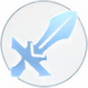

What are Hero Roles?
A role or class defines how a hero contributes to their team throughout a match. With 132 heroes available across 6 classes, every hero has unique stats and abilities suited to a specific style of play.
Understanding roles is fundamental to building a balanced team. A well-rounded lineup typically includes a mix of frontline durability, damage output, and support — each role filling a gap the others cannot.
You don't need to master every role. Pick one or two that fit your playstyle and learn them deeply — consistency wins more games than switching roles every match.
Role Breakdown
Each role is described in full below — including what they excel at, their weaknesses, and the stats that define how they play.
Tank
The most durable heroes on the battlefield. Tanks lead the charge, absorb damage on behalf of their team, and use crowd control to disrupt enemy formations. A well-played tank creates the space your damage dealers need to eliminate threats.
Tanks are typically found in the Gold Lane or roaming as a second frontliner. Their high HP and defense make them hard to kill, but their damage is low — they win by surviving, not by killing.

Fighter
Fighters sit between the tank's durability and the assassin's damage. They can fill multiple roles depending on the team lineup — acting as a semi-tank, a crowd controller, or a sustained damage dealer. Fighters shine in the EXP Lane where they can 1v1 opponents and pressure turrets alone.
They typically grow stronger as the game goes on, becoming major threats in extended fights during the late game.
Assassin
Assassins are agile hunters that specialize in eliminating high-value targets quickly. They wait for the right moment to strike — no sooner, no later. Typically played as the Jungler, they use the jungle to rotate unseen and gank vulnerable lanes.
Their low HP makes positioning critical. Assassins are punished hard for mistiming their engages, making them better suited to experienced players. Lifesteal is strongly recommended to maintain sustainability in fights.
Mage
Mages deal magic damage through powerful skill combinations, often hitting multiple enemies at once with area-of-effect abilities. Most mages have either high burst damage or strong crowd control — and some have both. They are most often found in the Mid Lane, where they can rotate quickly to both sides of the map.
Their low durability makes them frequent targets in team fights. Always position behind your frontline and invest heavily in cooldown reduction to chain abilities effectively.
Marksman
Marksmen are ranged damage dealers whose power is built almost entirely on their basic attacks. Positioned safely behind their team, a farmed marksman can shred through tanks, assassins, and structures alike. They are the fastest heroes at taking down turrets and are essential for securing objectives like the Lord.
They are commonly referred to as the Carry or ADC (Attack Damage Carry). Low durability and mobility mean they rely on teammates to protect them — never engage alone and always maintain a safe distance from threats.
Support
Supports keep their team alive and in the fight. Whether through healing, shields, or crowd control, their value lies in amplifying their allies rather than dealing damage. A good support is often the difference between a team fight won and a team fight lost.
Supports typically pair with the Marksman in the Gold Lane or rotate through mid to wherever they are needed. Avoid farming lane minions — your carry needs that gold. Instead focus on creating kills, preventing them, and building vision across the map.
Lane Assignments
Each role has a natural lane assignment based on where they can farm most effectively and contribute the most to early objectives. Deviating from these assignments is possible but requires coordination with your team.
Gold Lane
Marksman, Support
Mid Lane
Mage
EXP Lane
Fighter, Tank
Jungle
Assassin, Fighter
Roaming
Support, Tank
The Roamer does not farm minions — they purchase Roam items and earn gold through assists and objectives. Their job is to create advantages for the rest of the team through vision, ganks, and peel.
Picking Your Role
Not sure where to start? Use these tips to find a role that fits your preferred playstyle before diving into a specific hero.
New to the game? Start with Tank or Fighter. Both are forgiving, have strong base stats, and don't punish positioning mistakes as harshly as other roles.
Want to carry games? Marksman and Assassin have the highest individual impact when played well, but require good map awareness and positioning.
Enjoy enabling teammates? Support and Tank roles are most rewarding when your team plays around you — great for coordinated squads.
Like playing solo? Fighter in the EXP Lane is one of the most independent roles — you can win your lane without relying on others and then rotate to help.
Master one, then branch out. Focusing on a single role first builds fundamental skills — farming, positioning, objective priority — that transfer to any other role.
Fill the gap. Before locking in, check what your team is missing. A balanced draft almost always outperforms five heroes of the same class.